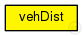

This documentation is released under the Creative Commons license
This documentation is released under the Creative Commons license(no description)
The following diagram shows usage relationships between types. Unresolved types are missing from the diagram. Click here to see the full picture.
The following diagram shows inheritance relationships for this type. Unresolved types are missing from the diagram. Click here to see the full picture.

| Name | Type | Description |
|---|---|---|
| BaseWaveApplLayer | simple module |
WAVE application layer base class. |
| Name | Type | Default value | Description |
|---|---|---|---|
| debug | bool | false |
whether to print debug output |
| headerLength | int | 88bit |
header length of the application |
| sendBeacons | bool | false |
tell the applayer to periodically send beacons |
| beaconLengthBits | int | 256bit |
the length of a beacon packet |
| beaconPriority | int | 3 |
the access category of the beacon messages |
| beaconInterval | double | 1s |
the intervall between 2 beacon messages |
| maxOffset | double | 0s |
the maximum delay of messages sent down to avoid synchronous channel access |
| sendData | bool | false |
whether this applayer should send data |
| dataLengthBits | int | 1024bit |
the length of a data packet |
| dataOnSch | bool | true |
tells the applayer whether to use a service channel for datapackets or the control channel |
| dataPriority | int | 3 |
the access category for data packets |
| sendSummaryVectorInterval | int | 0s |
Add for Epidemic |
| maximumEpidemicBufferSize | int | 0 |
define the maximum buffer size (in number of messages) that a node is willing to allocate for epidemic messages. |
| hopCount | int | 0 |
define the maximum number of hopes that a message can be forward before reach the target |
| maximumMfcvEpidemicBufferSize | int | 0 |
define the maximum buffer size (in number of messages) that a node is willing to allocate for mfcv_epidemic messages. @signal[numberHops](type="long"); @statistic[hopCount](title="Hop Count"; source="numberHops"; record=vector,histogram,stats); @signal[delay](type="double"); @statistic[delayTime](source=delay; title="End-to-End Delay"; record=stats,histogram,vector); @signal[messageReceived](type="long"); @statistic[numMessageReceived](source=sum(messageReceived); title="Total Number or Message Received"; record=stats,histogram,vector); |
| target_x | int | 0 |
jonh test |
| target_y | int | 0 | |
| timeUpdatePosition | int | 1s | |
| sendUpdatePos | bool | false |
tell the applayer to periodically send UpdatePosition |
| repeatNumber | int | 0 | |
| dataInterval | int | 1s | |
| sendWhileParking | bool | false |
send messages when the car is parked |
| timeDeleteMessage | int | 1s |
int timeTrySendMessage @unit("s") = default(1s); |
| deleteMessage | bool | false |
tell the ap |
| messageBufferSize | int | 10 | |
| beaconBufferSize | int | 10 | |
| timeValidBeacon | int | 10s |
| Name | Value | Description |
|---|---|---|
| class | vehDist | |
| display | i=block/app2 |
| Name | Direction | Size | Description |
|---|---|---|---|
| lowerLayerIn | input |
from mac layer |
|
| lowerLayerOut | output |
to mac layer |
|
| lowerControlIn | input | ||
| lowerControlOut | output |
simple vehDist extends BaseWaveApplLayer { @class(vehDist); @display("i=block/app2"); bool sendWhileParking = default(false); //send messages when the car is parked // int timeTrySendMessage @unit("s") = default(1s); int timeDeleteMessage @unit("s") = default(1s); bool deleteMessage = default(false); //tell the ap int messageBufferSize = default(10); int beaconBufferSize = default(10); int timeValidBeacon @unit("s") = default(10s); }
This documentation is released under the Creative Commons license